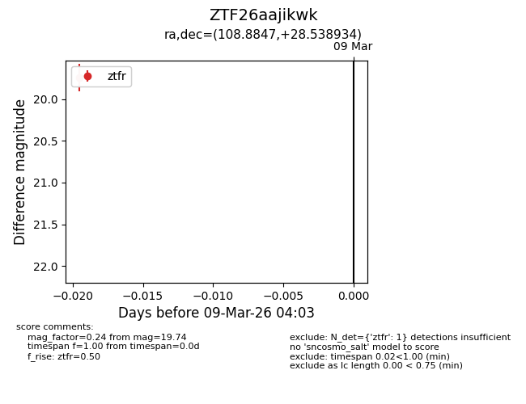
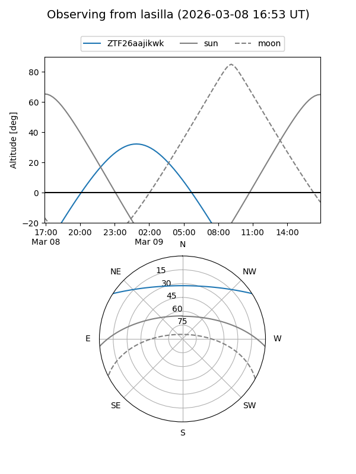
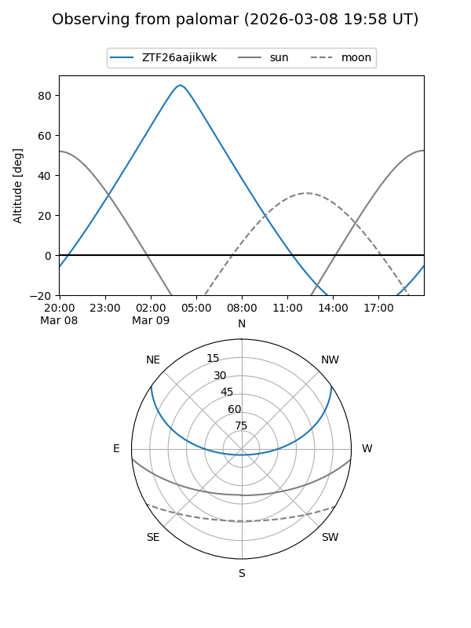

ZTF26aajikwk
Target ZTF26aajikwk at 2026-03-09 04:04
Aliases and brokers:
FINK: link
Lasair: link
ALeRCE: link
alt names
ZTF26aajikwk (ztf,fink_ztf)
Coordinates:
equatorial (ra, dec) = 108.8847,+28.53893
equatorial (HMS+DMS) = 07:15:32.32,+28:32:20.16
galactic (l, b) = (189.2512,+17.45256)
Flags:
Photometry:
last ztfr=19.74
1 ztfr detections
Lightcurve

Visibility


Additional plots